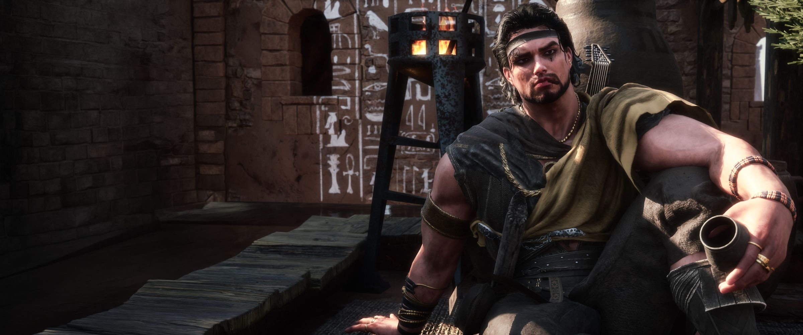
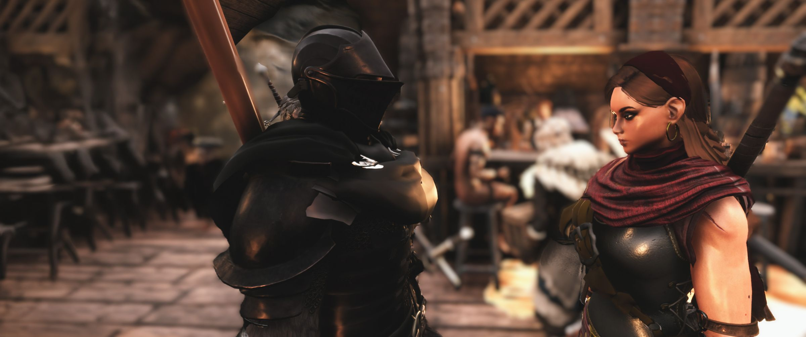
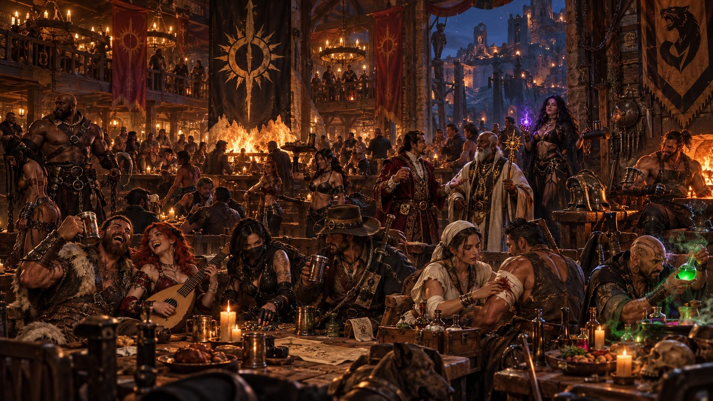
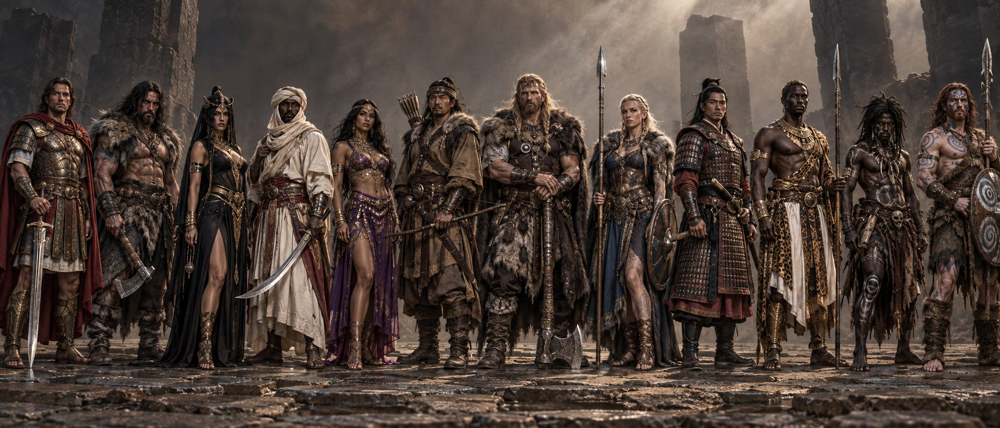

Sorcerer
Provisional
-
{{ t.tier }}
{{ t.power }}{{ t.blood }}
SOLACE is an English Text RP server. Conan roleplay community for players who want more than a race to the strongest weapon.

A lonely camp can become a trading post.

An argument can start a feud.
A lost fight can become the beginning of a better story.
Spend your evening in the tavern.
PvP is allowed in the Hub; raids are not. A winning attacker may only injure. A losing attacker falls under NVL: the person they attacked may kill them, take them as a slave, or have them jailed in the Hub.
Understand Hub PvP before starting an attack →A lively world is not the same as a world that revolves around one faction. Nobles, wanderers, craftspeople, merchants and troublemakers should all find reasons to log in.
Your character can face consequences without your place in the community becoming disposable.
Scenes captured by our players.
Your first evening shouldn't feel like homework.
Draft v0.1 | SOLACE rulebook with owner-approved amendments.
Write your character, not someone else's.
Mechanical PvP is the default combat resolution. SOLACE does not use dice PvP.
A lost fight should create a story, not take away a player's real-world boundaries.
A raid is a conflict scene with a goal, not an offline inventory purge.
Build a believable place people can actually visit.
The short pages explain what you need most often. This annex collects inherited edge-case mechanics and their exceptions so no one has to guess during a scene.
{{ subtitle }}
Found something unclear or wrong? Fill this in, copy it and paste it into a General Question ticket on Discord.
{{ reportText }}
NVL applies only to the attacker who started the fight and lost. Hub raids and sieges are never allowed.

Active clan members (inactive members don't count in audits):
{{ calcNote }} Caps are ceilings, not free pieces. Extensions come from qualifying research or an approved donation extension. Donations are not live.

{{ f.a }}
No matches yet. Try “PvP”, “captivity” or “building”.
Couldn't find it? Ask staff and open a General Question ticket.
Starting bonuses this profession adds to two RPR skills. They stack with Category and Skill Points; a final modifier never goes above +10.
The Bard performs through music, song, storytelling or another form of entertainment. If the RP dice roll succeeds, characters within range are calmed and drawn into the performance.
The Bard inspires those around them through their performance, granting a temporary healing bonus.
The Bard attempts to win someone over through personality, words or performance.
A long-term story milestone. Keep evidence of every qualifying scene and submit it through a ticket for staff review.
Starting bonuses this profession adds to two RPR skills. They stack with Category and Skill Points; a final modifier never goes above +10.
The Bounty Hunter may attempt to track a target through a valid RP trail.
The Bounty Hunter may attempt to force the truth out of another character.
A passive profession ability used against characters who have accumulated serious IC reasons for execution.
A long-term story milestone. Keep evidence of every qualifying scene and submit it through a ticket for staff review.
Starting bonuses this profession adds to two RPR skills. They stack with Category and Skill Points; a final modifier never goes above +10.
The Medic can treat injuries of any severity.
The Medic may reduce a selected character’s Injury level by one stage.
The Medic restores a selected character’s strength for a limited time.
A long-term story milestone. Keep evidence of every qualifying scene and submit it through a ticket for staff review.
Starting bonuses this profession adds to two RPR skills. They stack with Category and Skill Points; a final modifier never goes above +10.
The Fighter pushes through exhaustion and keeps fighting.
The Fighter reduces the severity of an Injury they receive.
A Fighter with a Light Injury may still initiate PvP, but this skill must be used before sending PvP Intent.
A long-term story milestone. Keep evidence of every qualifying scene and submit it through a ticket for staff review.
Starting bonuses this profession adds to two RPR skills. They stack with Category and Skill Points; a final modifier never goes above +10.
The Thief uses a lockpick item to open locked access points and containers.
The Thief may steal from containers they successfully access through Lockpicking.
The Thief gains additional freedom when hiding their identity.
The Thief uses a poisonous but pleasant-smelling perfume to influence everyone within range.
A long-term story milestone. Keep evidence of every qualifying scene and submit it through a ticket for staff review.
Starting bonuses this profession adds to two RPR skills. They stack with Category and Skill Points; a final modifier never goes above +10.
The Alchemist creates special potions with powerful temporary effects. Each special potion can be crafted once per day, separately from the others. Brewing and using these potions does not require a dice roll.
The drinker must answer questions truthfully while under the potion’s effect.
The drinker forgets everything that happened during the last 1 hour.
The drinker becomes unable to speak coherently.
The drinker becomes highly suggestible and mentally overwhelmed, believing what they are told while under the potion’s influence.
A restorative potion used to cleanse harmful substances from the body.
A special potion with a 1 hour duration.
A long-term story milestone. Keep evidence of every qualifying scene and submit it through a ticket for staff review.
Starting bonuses this profession adds to two RPR skills. They stack with Category and Skill Points; a final modifier never goes above +10.
The Slaver attempts to break a captive’s will through repeated RP.
Broken is the result of successfully using Break Will three times on the same character. It is not a separate skill.
When a character becomes Broken, the Slaver may give them a personal Intimidation Trigger: a chosen word or phrase. When the slave hears it, they become afraid and are reminded of their owner and conditioning.
The Slaver attempts to force a single truthful answer from another character.
The Slaver attempts to make another character fear them.
A long-term story milestone. Keep evidence of every qualifying scene and submit it through a ticket for staff review.
Starting bonuses this profession adds to two RPR skills. They stack with Category and Skill Points; a final modifier never goes above +10.
The Courtier uses diplomacy, confidence and persuasive language to influence another character.
The Courtier creates convincing forged correspondence and uses political deception to mislead others.
The Courtier uses negotiation and bargaining to secure a better deal.
A long-term story milestone. Keep evidence of every qualifying scene and submit it through a ticket for staff review.
Starting bonuses this class adds to two RPR skills. They stack with Category and Skill Points; a final modifier never goes above +10.
Sense whether intent directed at the Sorcerer is broadly positive or negative.
Attempt a bounded mental or behavioural command.
Remove one target’s memory of a specific incident.
A short window of limited invisibility.
An ultimate buff for the Sorcerer or one nearby character.
Starting bonuses this class adds to two RPR skills. They stack with Category and Skill Points; a final modifier never goes above +10.
A high-grade weapon fitting that improves both offensive power and penetration.
Required materials are shown in-game.
A specialized fitting designed to punch through heavily armored targets.
Required materials are shown in-game.
A reinforced armor fitting that increases the protection provided by a piece of armor.
Required materials are shown in-game.
A special utility ring that allows its wearer to carry a huge supply of Feast items without their normal weight.
Required materials are shown in-game.
Starting bonuses this class adds to two RPR skills. They stack with Category and Skill Points; a final modifier never goes above +10.
The Wise reads the target’s intent through their aura.
The Wise reduces a selected character’s Injury by 1 level.
The Wise removes temporary harmful effects from a selected character.
The Wise grants the Blessed effect to either themselves or one chosen character.
The Wise empowers either themselves or one chosen character.
{{ k.what }}
Every potion used on another character needs that player's OOC consent. A potion never creates consent.
| Potion | Effect | Duration |
|---|---|---|
| {{ p.name }} | {{ p.effect }} | {{ p.duration }} |
Can I avoid RP while gathering? You are considered IC outside the designated starting zone. Do not use OOC status to evade encounters. Communicate briefly and respectfully if a real-life interruption happens.
Is this a dice-combat server? No. Mechanical PvP is the combat default. Some specialist non-combat abilities use separate RP success systems.
Can I record the game? Not for OOC intelligence or distribution of private scenes. See Privacy & Sharing → for limited promotional sharing.
The Exiled Lands are harsh. The people living in them don't have to be one-dimensional. SOLACE welcomes ambitious chiefs, cautious traders, scholars, innkeepers, solitary hunters, travelling healers and criminals who understand that trouble follows them home.
Your choices create opportunities for other characters. Diplomacy can keep a village alive. Raiding a rival has costs. An enemy who survives may become a useful ally or a lifelong rival. PvP supports roleplay; it is not an excuse to write everyone else's story for them.
The base setting is Conan's Hyborian world. A custom location or exceptional concept must be reviewed against Conan lore and the active server map. Refer to Peoples & Cultures → for a starting point, not an exhaustive canon encyclopedia.
The Hub is where traders, entertainers and adventurers cross paths. It hosts player markets and planned profession activity. It allows PvP, but attacking inside the city carries a uniquely severe consequence: read The Hub →.
People on either side are here to build stories together. Distinguish your feelings from your character's grudges, and respect the boundaries established through consent.
SOLACE is a 21+ English Text roleplay community. Stay in character where required; keep IC conflict out of OOC spaces; do not metagame, exploit, harass, troll, evade bans or recruit players to other servers through this community. Staff decisions should be documented. Read PvP → · Consent →
Players are expected to handle minor disagreements maturely. Staff is not a personal mediator for every argument. Use Discord block and a calm direct conversation when appropriate. Persistent harassment, rule breaking, and IC/OOC blending belong in a ticket with evidence. The directly affected player normally submits a harassment complaint; see the emergency reporting and staff-report routes in Support & Tickets →.
Participation in SOLACE is 21+. Player characters must also be adults in body and mind. No underage/childlike sexual themes. No discriminatory slurs, targeted hatred, stalking, deliberate harassment, griefing or trolling. Follow Discord's community guidelines as well as site rules.
Membership in the official Discord is required to play. Keep application details accurate and open a ticket before leaving Discord or taking an extended absence. Unannounced departures are handled through the documented account/character process; don't assume staff can preserve access if they cannot identify your character. No unreported alternate accounts or ban evasion. Household players and Discord-account transfers require a ticket.
A missing technical loophole is not permission to abuse other players or the server. Rule lawyering, bad-faith debate and exploitation of wording may lead to staff action. Staff may address harmful conduct not exhaustively itemized in these pages under the published community principles. Formal decisions must still be recorded with reasons and an appeal route; emergency safety measures are treated separately.
Your character may lie, plot, fight or fall in love. That is not permission to harass the player behind another character, pressure someone to change a scene in private messages, or call OOC allies into an IC dispute. Use IC means for IC retaliation. Discuss required consent and practical coordination OOC without manipulating outcomes.
Do not use SOLACE spaces, private recruitment directed at its members, or server events as an advertising funnel for another server. Do not actively poach players from another community in SOLACE's name. Friends may choose to play together without being coerced or advertised to.
A recording of an encounter cannot be used as IC intelligence. Do not secretly observe streams, distribute private scenes or pass footage to uninvolved players for in-game advantage. Screenshots/clips may be retained confidentially for evidence. Promotional highlights and community content may be shared under the permission and privacy rules on Privacy & Sharing →. Recording itself is not a way around metagaming restrictions.
Staff may review suspicious roleplay and take proportionate, temporary protective measures where needed. A disciplinary decision requires explainable supporting findings, not suspicion alone. Confirmed conduct, allegations and interpretation must be kept distinct. Investigators must recuse themselves when their own character/faction is involved. Use Support & Tickets → for decisions and appeals.
No exploits, scripts, dupes, deliberate lag, mesh abuse, unlawful access, alternative-account circumvention, combat logging or bypassing approved game mechanics. Notify staff privately if you find an exploit rather than demonstrating it in public. Do not use a ticket as permission to keep exploiting something.
The published rule revision and effective date govern. Emergency platform/player-safety responses may be immediate. Permanent or material rule changes should be announced and ordinarily apply prospectively; the amendment log will state any exception.
You are IC outside the designated starter area. Use local chat and appropriately emoted whispers for RP; clan chat is OOC. All roleplay communication must be in English, with a translation if you use another language. Do not use modern terminology, copied pop-culture characters or anachronistic songs in IC scenes. Original characters should fit Conan lore.
Describe attempts, and allow other characters to respond. Don't force a character to react to your thoughts. Be courteous about posting order in a large scene. If life interrupts, explain briefly OOC in whisper and arrange a sensible pause; do not disappear to evade a difficult consequence.
Keep names, behavior and character concepts plausible in the Conan setting. Lore-based strengths and flaws, once part of an approved character concept, should actually be played. Modern slogans, anachronistic media, famous fantasy names and out-of-world references may be moderated. Questions about culture, appearance or rare concepts belong in a lore/character ticket.
RP in local or whispered chat with an emote establishing what your character is doing. Use OOC whispers or designated channels for practical notes, such as an urgent pause or a consent clarification. Clan chat is not an IC telepathic network; a raven, runner or approved in-world ability must convey IC information.
Seeing text appear in local chat does not prove you were physically close enough to hear it. Walls and multiple doors stop ordinary hearing. Capture evidence of viable positioning if information may later matter in a dispute. When stealth is plausible and one character OOC notices another, the observer rolls perception and the hidden character responds with stealth; a person standing visibly in the open needs no discovery roll. This is an RP tool, not dice PvP.
Use /act → to describe visually identifiable features, especially while disguised. State clothes, build and relevant visible markers: e.g. Scarred traveller in a sand-coloured hood. Don't use secret character names, unexplained titles or vague descriptions to evade identification.
No sexualized underage content, sexual content with animals, or other prohibited content under server/platform policy. A mature setting does not remove consent or platform limits. No unwanted sexual content can be imposed through a success roll or prior IC conduct. Sensitive RP boundaries are detailed on Consequences & Consent →.
Give a new character at least 5 days before requesting a normal reroll, unless staff grants an exception. Using the initial 5-day reroll places the account on the inherited 30-day reroll cooldown. Open the relevant ticket and disclose ongoing conflict. A dispute that has been pursued within the preceding 5 days may count as active; staff decides whether a contest is genuine. Rerolls are announced through the accountability process. Parties normally have a 24-hour opportunity to contest an unresolved story, but a contest cannot be used as an excuse to demand a free kill. The inherited fuller process allows up to 48 hours after reroll for a qualifying contest; see the published staff process for timing. A new character must not join revenge or resurrection RP concerning the old character's death. Self-perma requires staff approval and is not a means to dodge a conflict. Timers reset at a new wipe, subject to unresolved conflict review.
Players have the inherited two standard character shelves. A living shelved character cannot be brought back for 30 days. Earned research/mastery/merits are retained where the configured systems support preservation. A deceased character intended for later approved resurrection must be shelved. Custom/RP-acquired race eligibility is not automatically inherited; check current Conan-specific application policy. Notify staff before leaving Discord or becoming absent.
Pregnancy is not actively played in SOLACE. Where needed for an agreed long-term story, use an appropriate shelving request; no pregnancy RP as a shield against active conflict.
Related: Peoples & Cultures → · Professions → · Consequences & Consent → · Support & Tickets →
An aggressor declares an RP intent and the server's PvP-intent command. Everyone within the applicable local range must make their initial Join or Surrender response. Once all affected people have declared Ready, the initiating player starts the countdown. You cannot summon late allies into an already active fight. There is one home-base defense exception detailed below.
Your character is IC and PvP can occur throughout the map, except the designated starter zone and other expressly published protected technical locations. The Hub permits PvP but applies its own sharply restricted outcomes. Read The Hub → before you initiate there.
(PvP Intent); issue the approved server command (legacy example: /pvpintent →, subject to bot implementation).Ready or R when declarations have finished./pvp start to begin the 10-second start timer. Fight only after the countdown ends. which installed plugin provides these exact commands; do not show nonfunctional slash commands as live instructions.A bystander within the original initiation range must respond to the initial intent. After combat becomes active, no new participant may join from outside. The sole exception: if the character who was attacked successfully reaches their own base, characters already inside that base may take part in defending them. They may not teleport to create artificial reinforcements. what counts as 'inside', and how staff records the exception.
After being mechanically downed, do not rejoin the battle. Return promptly to the down location if the game's death/respawn system requires it, kneel or lie there and apply the configured injured status. Downed players cannot continue combat. The standard consequence phase follows unless a specific zone overrides it. Leaving a downed player without RP for 30 minutes after PvP ends permits them to leave still injured; for battles of 10+ players, that unattended limit is 45 minutes.
An aggressive spell/merit/ability used around others must be properly emoted to give them a chance to respond; the recipient may treat it as intent. On leaving an instance during an active fight, move at least 5 foundations clear of the entrance before attacking; do not use the loading zone to heal/camp cooldowns. A fleeing participant cannot return to the same instance for 30 minutes or until the fight has ended, whichever inherited restrictions apply. Where a public event is formally tagged KOS, follow the event notice and record your join; there is no blanket KOS permission outside advertised KOS events.
Regular world encounters use Consequences & Consent →. The Hub has different and more severe rules for the aggressor who loses, and only Injury is permitted as a winning aggressor's consequence in the Hub. Raid battles additionally use Raids & Sieges →.
A is initiated on the road. A joins and flees; the fight has already started. A reaches their own base. Only defenders already inside that base may now enter under SOLACE's narrowly defined exception. Friends who receive a Discord message, spawn elsewhere or warp across the map may not join.
Regular-world PvP may lead to an injury, disarming, robbery, agreed enslavement, marking, dismemberment or justified permadeath, depending on the appropriate stage and limitations. No consequence can be used as OOC retaliation. The Hub is a separate exception: a victorious aggressor there may apply Injury only, not robbery or kidnapping. See The Hub →.
SOLACE will use a Consent Form so players can specify permitted, conditional and refused categories before participating in heavy RP. Enslavement and Slave Breaking require the affected player's explicit OOC consent. Non-consensual sexual content is never generated by a mechanical/rolling result or treated as automatically accepted because of earlier IC acts. Consent can be clarified or withdrawn; agree a compatible non-sensitive story result where appropriate. publish the actual consent form and category labels.
If all parties have already agreed the consequence, they may skip depiction of a scene, agree what took place and play its aftermath. FTB is not an escape from an otherwise valid agreed IC consequence, but it is not permission to impose an expressly refused sensitive act. Communication is required so both sides leave with the same understanding.
The inherited introduction specifies a maximum of one Primary and three Secondary consequences, with no duplicate consequence on the same character. The source later conflicts with this and says any number may be applied subject to exceptionsPermadeath is a sole outcome; a Primary consequence spell cannot be stacked with another Primary spell, and no more than three Secondary spells are allowed. authoritative limit.
Significant injury (above Moderate); major dismemberment when allowed; Primary Robbery; defined Primary consequence spell; consensual enslavement where it is governed as a major consequence.
Moderate injury; scarring/marking and defined minor mutilation; Secondary Robbery; defined Secondary consequence spell.
Only take permitted categories, after a valid world encounter, with a proper RP emote. These legacy currency/material item names require mapping to SOLACE's actual economy:
| Primary robbery, choose one | Amount/condition |
|---|---|
| Gold | 50% |
| Item with Power Rating | 2, only from the second PvP encounter |
| Secondary robbery, choose one | Amount/condition |
|---|---|
| Gold | 50% |
| Weapons/armour | 1 gear pieces |
| Other resources | 1 stacks of unlisted items |
Player-crafted, enchanted and potion-category objects need the inherited one-special-item restriction rather than being counted as disposable stacks. Robbery can include emote-supported inspection of mount inventory, not OOC reading of hidden items. A Thief may take items from a player's base: up to 2 stacks per chest, leaving a discoverable POI, with a 6-hour tracking window and a record of the RP. Outside of this, base property is only taken in a valid raid.
A downed character receives the configured Slightly Injured status and cannot run away, fight again or recover via external aid against the victor's will during consequence processing. Where not attended after combat, the 30/45-minute unattended rule in PvP → applies. Restraining a downed player takes one appropriate emote; freeing a restrained player requires an initiating emote, a 5-minute wait, then a second emote. A defeated character may be narratively disarmed without claiming a forbidden robbery; they cannot use a new weapon before reaching home under the inherited rule. Injury severity and magic/healing limitations must be respected.
Server rule, for every character: captivity lasts 24 hours. During that time, captors who remain active must provide the captured player with at least 2 hours of actual RP. If the capturing party is active and fails to provide that RP within the window, the captive is free to leave. Long-term captivity or enslavement is allowed when both players agree. Everything happens with the player's consent, and consent can be withdrawn. The immediate consequence phase after a fight is 3 hours, unless extended by mutual agreement. clock starting event, paused server outages and how a captive reports an unattended session.
With the target player's advance OOC agreement, each successful Breaking use contributes 1/3. Three successful uses on the same target make them Broken. Failures do not add progress. No roll overrides the actual player's consent. The meaning, duration, removal, maximum frequency and permitted orders of Broken are under design and must not be fabricated by the website.
Truth Compulsion: a Slaver may force a consenting captive to answer questions truthfully. Like every captivity rule, it needs the captive player's OOC consent.
The most consequential outcome needs a reason tied to existing IC events. Open a Permadeath Request before the fatal emote; normally a first encounter does not authorize forced permanent death. An exceptional first-encounter request must be approved in advance. In a genuinely immediate exceptional scene, open a documented ticket and leave the body intact for admin review rather than precluding a possible left for dead decision. Permadeath cannot be stacked with additional consequence types. 'No Value of Life' is contextual, not automatically proven by refusing an unreasonable demand or behaving consistently with an approved culture/flaw. Do not perma-kill uninvolved clan members simply because their leaders lost. A related admin member must not be the deciding reviewer.
Critical hub warning: Starting PvP in the Hub and losing puts your character under the NVL rule: the person you attacked may kill you, take you as a slave, or have you jailed in the Hub. Read The Hub → before attacking anyone there.
A raider does not automatically empty the defender's base. If defenders flee their defense, each raider may take up to one inventory at 100% encumbrance under the inherited rules; staff controls chest access. map these item categories to installed SOLACE mechanics.
After raiding a clan, attackers have a 7-day cooldown before raiding that clan or the participating defenders again. This inherited cooldown does not apply to defenders who initiate a counter-raid, and it does not arise if defenders flee under the source-specific exception. Thief lockpicking is limited to two entrants without an approved full raid; see /professions/thief →.
Do not watch a raid OOC or share live Discord/stream intelligence. IC calls for help require a messenger, raven or another actually available lore-approved in-world communication, documented as needed. Staff players may take part in faction conflict but a person whose character/faction participates cannot moderate, approve, observe as referee or adjudicate that raid. If no uninvolved observer is available, postpone the raid.
The Hub can have ordinary PvP with its own consequences, never a declared Hub raid or siege. See The Hub →.
Defender clan · Attacker clan · Attacker allies · IC objective · Online active-member evidence · Proposed time / target timezone · Independent staff observer.
Inherited base caps and maximum extensions, chosen by clan membership. Extension allowance may come from qualifying gameplay research and donation building extension as approved by the owner. These caps are ceilings, not automatic free building pieces. Donators may have extra building pieces.
| Members | Base pieces | Base placeables | Max extra pieces | Max extra placeables | Absolute max pieces | Absolute max placeables |
|---|---|---|---|---|---|---|
| 1 | 280 | 160 | 50 | 20 | 330 | 180 |
| 2 | 520 | 220 | 70 | 40 | 590 | 260 |
| 3 | 760 | 280 | 100 | 60 | 860 | 340 |
| 4 | 1,000 | 340 | 125 | 80 | 1,125 | 420 |
| 5 | 1,240 | 400 | 150 | 100 | 1,365 | 500 |
| 6 | 1,450 | 455 | 350 | 100 | 1,700 | 555 |
| 7 | 1,660 | 510 | 350 | 120 | 2,010 | 630 |
| 8 | 1,870 | 565 | 350 | 120 | 2,220 | 685 |
| 9 | 2,080 | 620 | 500 | 150 | 2,580 | 770 |
| 10 | 2,260 | 670 | 500 | 150 | 2,760 | 820 |
| 11 | 2,400 | 710 | 500 | 150 | 2,900 | 860 |
| 12 | 2,600 | 750 | 500 | 150 | 3,100 | 900 |
Legacy figures reproduced numerically for owner's adopted policy; game mod implementation must be verified. Inherited in-game Masonry research can grant an extension up to the same ceilings. Research extensions do not stack with each other; explicitly identified donation allowances can follow their published exception.
Maximum one mount per player, with a clan cap of three. Flaggis and wallpapers need staff ticket approval and should remain under the admin-controlled placement workflow. Limits:
| Active clan size | Mount | Pet |
|---|---|---|
| 1–4 | 1-4 | 2 |
| 5–8 | 5-8 | 4 |
| 9–12 | 9-12 | 6 |
One Thespian per clan, only in the Hub Player Market. Turn off head tracking; use vanilla armour only and no accessories where this applies to your installed NPC mod. No NPC as unraidable gold/item storage, and no trading of items intended to be non-droppable.
The Solace rule limits inventories for performance. Do not use decorative containers as hidden storage. Inherited personal inventory cap is 30 slots excluding the action bar, subject to actual deployed mod configuration and approved in-world expansion. A standard personal storage chest has 25 slots; an improved version through Masonry has 40. The per base inventory caps are:
| Per clan | Allowed |
|---|---|
| Vault | 1 |
| Donator Vault | 1 (only if legally/technically enabled) |
| Dismantling Bench | 1 |
| Freezer | 1 |
| Universal Furnace | 1 |
| Universal Crafting Station | 1 |
| Processing Station | 1 |
| Per player | Allowed |
|---|---|
| Personal Chest | 1 |
| One Elixir Cabinet | 1 |
Inactive junk can be cleaned by scheduled server scripts, if deployed; staff should publish what those scripts delete. Deleted junk generally isn't refundable under inherited rules.
No fictional coordinates are published. Special utility sites often reserve a 1/2-grid perimeter; principal public market/arena-like sites a 3/4-grid perimeter. A SOLACE restricted-map overlay will be published after the map is confirmed. All instanced dungeons remain no-build zones.
Found something unclear? Open a General Question ticket. Staff decisions follow the published revision and effective date (G-10).